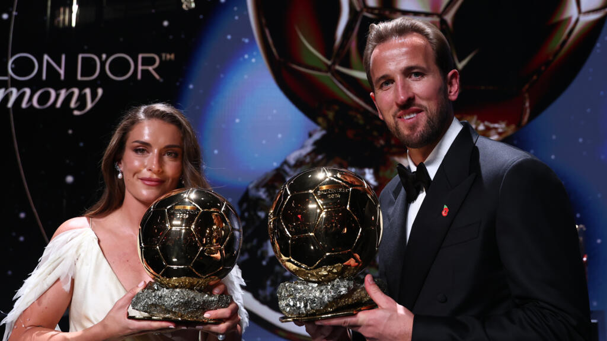

Balón de Oro 2026
Publicado el por Josué

El Balón de Oro 2026 premió a los mejores futbolistas del mundo por su rendimiento durante la temporada 2025-2026.
El ganador masculino fue Harry Kane, de Inglaterra, y la ganadora femenina fue Alexia Putellas, de España.
La ceremonia se celebró el 26 de octubre de 2026 en Londres, Inglaterra, en el 70.° aniversario del premio.[cite: 7]
Criterios para ganar el Balón de Oro
- Rendimiento individual y logros destacados durante la temporada con su club y selección.
- Clase y juego limpio demostrados en el terreno de juego.
- Valor acumulado de la trayectoria y fair play a lo largo de los años.
Comparativa de los Ganadores
| Categoría | Ganador/a | Nacionalidad |
|---|---|---|
| Masculino | Harry Kane | Inglaterra |
| Femenino | Alexia Putellas | España |